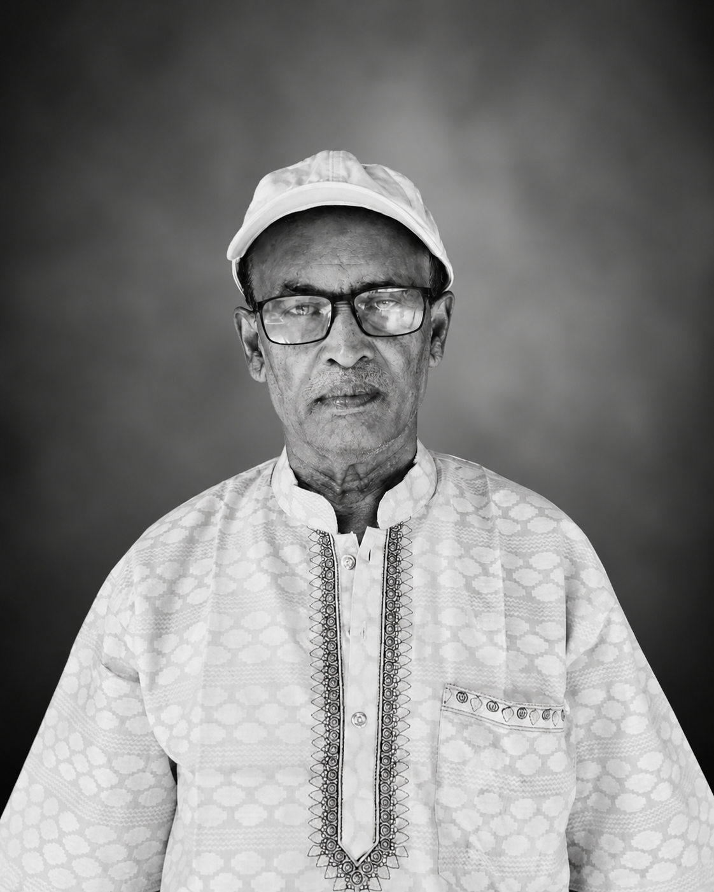
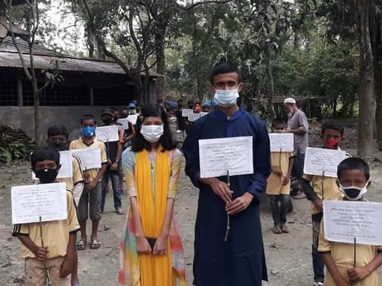
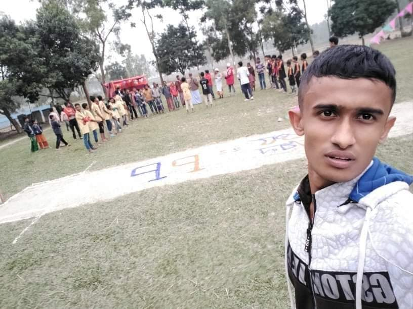

শিক্ষা, মানবতা ও সহমর্মিতার মাধ্যমে যোগ্য শিক্ষার্থীদের পাশে দাঁড়ানোই আমাদের লক্ষ্য।
স্কলারশিপ দেখুনসবার জন্য মানসম্মত শিক্ষার সুযোগ নিশ্চিত করা।
যোগ্য শিক্ষার্থীদের স্বপ্ন পূরণে সহায়তা করা।
সমাজে ইতিবাচক পরিবর্তন ও উন্নয়ন নিশ্চিত করা।

এস এম সোবহান একজন সৎ, নীতিবান ও পরিশ্রমী মানুষ। একজন পিতা হিসেবে তিনি তার সন্তানদের শিক্ষার জন্য অক্লান্ত পরিশ্রম করেছেন এবং সবসময় তাদের সঠিক পথে পরিচালিত করেছেন।
পেশায় তিনি একজন কৃষক, কিন্তু তার জীবনের মূল লক্ষ্য ছিল তার সন্তানদের শিক্ষিত করে তোলা। তিনি দৃঢ়ভাবে বিশ্বাস করেন যে, শিক্ষা একটি জাতিকে উন্নতির পথে এগিয়ে নিতে পারে।
তার এই আদর্শ ও অনুপ্রেরণা থেকেই আমরা এই ফাউন্ডেশনের কার্যক্রম শুরু করেছি, যাতে গ্রামের মেধাবী ও সুবিধাবঞ্চিত শিক্ষার্থীরা তাদের শিক্ষার সুযোগ পায়।
আমরা বিশ্বাস করি, প্রতিটি পরিবারে যদি তার মতো একজন দায়িত্বশীল ও সচেতন অভিভাবক থাকে, তবে একটি উন্নত ও সমৃদ্ধ জাতি গড়ে তোলা সম্ভব।
৫ম থেকে ৮ম শ্রেণির শিক্ষার্থীদের জন্য এই স্কলারশিপ প্রদান করা হবে। প্রাথমিকভাবে এটি শুধুমাত্র রাজাহার ইউনিয়নের শিক্ষার্থীদের জন্য প্রযোজ্য। পরবর্তীতে এর কার্যক্রম আরও বিস্তৃত করা হবে।
এই ওয়েবসাইটের মাধ্যমে সম্পূর্ণ বিনামূল্যে নিবন্ধন শুরু হবে। পরীক্ষা অনুষ্ঠিত হবে ০১ আগস্ট। পরীক্ষার স্থান পরবর্তীতে জানানো হবে।
মেধা ও কৃতিত্বের ভিত্তিতে নির্বাচিত শিক্ষার্থীদের বিশেষ পুরস্কার প্রদান করা হবে।
নিবন্ধন শুরু: ২৫ জুন
পরীক্ষা: ০১ আগস্ট
সকল অংশগ্রহণকারীকে টি-শার্ট প্রদান করা হবে।
🥇 ১ম পুরস্কার: ১০,০০০ টাকা
🥈 ২য় পুরস্কার: ৫,০০০ টাকা
🥉 ৩য় পুরস্কার: ২,০০০ টাকা
এই শ্রেণির জন্য স্কলারশিপ কার্যক্রম খুব শীঘ্রই ঘোষণা করা হবে।
২০১৯ সালে, মরহুম মোঃ ফুলমিয়া এবং এস এম সোবহান শাহজাদার যৌথ উদ্যোগে পানিতোলা এলাকায় তরুণদের অংশগ্রহণে একটি সচেতনতামূলক র্যালির আয়োজন করা হয়। এই র্যালির মাধ্যমে সাধারণ জনগণের মধ্যে করোনা ভাইরাস সম্পর্কে সচেতনতা বৃদ্ধি করা হয়।

২০২০ সালে, এস এম সোবহান তিনটি গ্রামের অংশগ্রহণে সম্পূর্ণ বিনামূল্যে একটি ক্রিকেট টুর্নামেন্টের আয়োজন করেন। সকল খেলোয়াড়দের জার্সি প্রদান করা হয় এবং বিজয়ী দলকে পুরস্কার হিসেবে একটি খাসি ও মেডেল প্রদান করা হয়।
